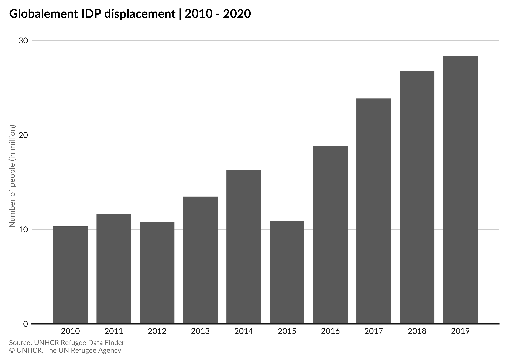
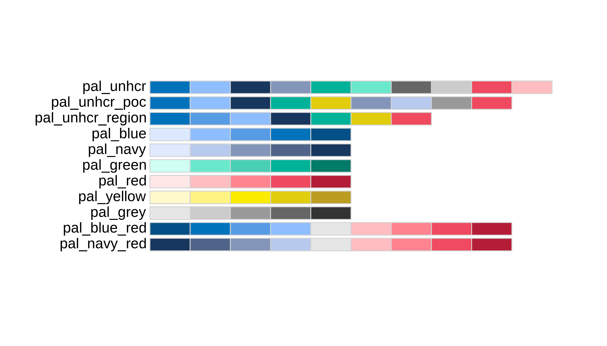
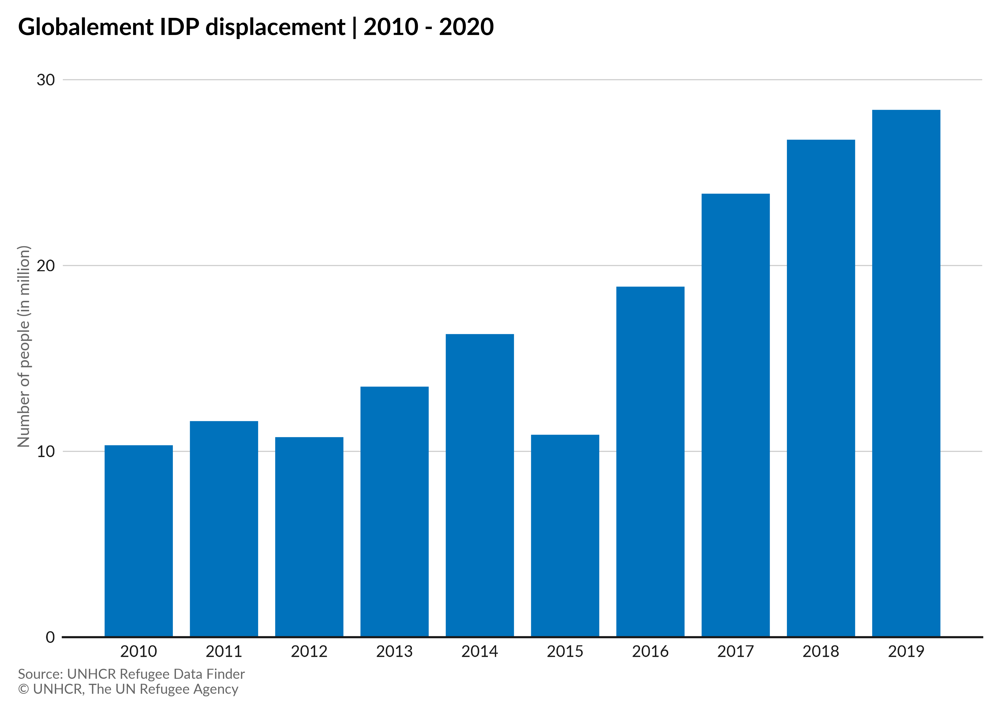
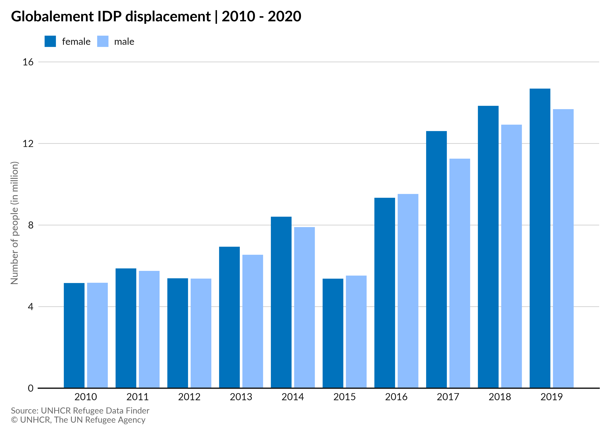

Overview
The unhcrthemes package provides a ggplot2 theme and a set of colour palettes for making charts and graphics based on UNHCR Data Visualization Guidelines. The goal of this package is to ease and speed up the creation of charts, while promoting the UNHCR visual identity with a predefined ggplot theme, as well as a set of colour palettes and scales.
Installation
This package is not on yet on CRAN and to install it, you will need the remotes package.
install.packages("remotes")
remotes::install_github("vidonne/unhcrthemes")Content
A package with all necessary elements to quickly implement UNHCR Brand style in your statistical products and data stories:
- Adjusted
ggplot2theme - A series of color palette for:
- A categorical palette for UNHCR main data visualization colors
- A categorical palette for people of concern to UNHCR categories
- A categorical palette for geographical regional divisions of UNHCR
- Six sequential color palettes for all the main data visualization colors
- Two recommended diverging color palette
Fonts
UNHCR uses Lato as its main font for publications and data visualizations. Arial can also be used as a fallback option if it is not possible to install Lato on your computer.
Usage
library(tidyverse)
library(scales)
library(unhcrthemes)
library(unhcrdatapackage) ## remotes::install_github("unhcr/unhcrdatapackage")Base ggplot2 theme
pop_total <- unhcrdatapackage::demographics |>
filter(Population.type == "IDP", Year >= 2010) |>
group_by(year = Year) |>
summarise(idp = sum(Total, na.rm = TRUE) / 1e6) |>
ungroup()
glimpse(pop_total)
#> Rows: 11
#> Columns: 2
#> $ year <dbl> 2010, 2011, 2012, 2013, 2014, 2015, 2016, 2017, 2018, 2019, 2020
#> $ idp <dbl> 14.69780, 15.47338, 17.67037, 23.92555, 32.27462, 37.49417, 36.62~
ggplot(pop_total) +
geom_col(aes(x = year, y = idp),
width = 0.8) +
labs(title = "Globalement IDP displacement | 2010 - 2020",
subtitle = "Number of people (in million)",
x = "",
y = "",
caption = "Source: UNHCR Refugee Data Finder\n© UNHCR, The UN Refugee Agency") +
scale_y_continuous(expand = expansion(c(0, 0.1))) +
scale_x_continuous(breaks = pretty_breaks(10)) +
theme_unhcr(grid = "Y")
UNHCR color palette
All recommended data visualization colors are accessible as palettes or scales (color/fill).

Base theme and color scale
ggplot(pop_total) +
geom_col(aes(x = year, y = idp),
fill = unhcr_pal(n = 1, "pal_blue"),
width = 0.8) +
labs(title = "Globalement IDP displacement | 2010 - 2020",
subtitle = "Number of people (in million)",
x = "",
y = "",
caption = "Source: UNHCR Refugee Data Finder\n© UNHCR, The UN Refugee Agency") +
scale_y_continuous(expand = expansion(c(0, 0.1))) +
scale_x_continuous(breaks = pretty_breaks(10)) +
theme_unhcr(grid = "Y")
pop_total_sex <- demographics |>
filter(Population.type == "IDP", Year >= 2010) |>
select(year = Year, female = FemaleTotal, male = MaleTotal) |>
pivot_longer(cols = -year, names_to = "sex",
values_to = "idp") |>
group_by(year, sex) |>
summarise(idp = sum(idp, na.rm = TRUE) / 1e6) |>
ungroup()
#> `summarise()` has grouped output by 'year'. You can override using the `.groups` argument.
glimpse(pop_total_sex)
#> Rows: 22
#> Columns: 3
#> $ year <dbl> 2010, 2010, 2011, 2011, 2012, 2012, 2013, 2013, 2014, 2014, 2015,~
#> $ sex <chr> "female", "male", "female", "male", "female", "male", "female", "~
#> $ idp <dbl> 5.158210, 5.170928, 5.874562, 5.753568, 5.389737, 5.375677, 6.938~
ggplot(pop_total_sex) +
geom_col(aes(x = year, y = idp, fill = sex),
width = 0.8,
position = position_dodge(width = 0.9)) +
scale_fill_unhcr_d(palette = "pal_unhcr") +
scale_y_continuous(expand = expansion(c(0, 0.1))) +
labs(title = "Globalement IDP displacement | 2010 - 2020",
subtitle = "Number of people (in million)",
x = "",
y = "",
caption = "Source: UNHCR Refugee Data Finder\n© UNHCR, The UN Refugee Agency") +
scale_x_continuous(breaks = pretty_breaks(10)) +
theme_unhcr(grid = "Y")
UNHCR packages
unhcrthemes is part of unhcrverse, a set of packages to ease the production of statistical evidence and data stories.
- unhcrdown: UNHCR templates for R Markdown
- unhcrdatapackage: Use UNHCR Open data
- hcrdata: API to connect to internal data source
- HighFrequencyChecks: Perform High Frequency Check
- koboloadeR: Process data crunching for survey dataset
You can install them all with the following:
## unhcrdown
remotes::install_github("vidonne/unhcrdown")
## unhcrdatapackage
remotes::install_github('unhcr/unhcrdatapackage')
## hcrdata
remotes::install_github('unhcr-web/hcrdata')
## HighFrequencyChecks
remotes::install_github('unhcr/HighFrequencyChecks')
## koboloadeR
remotes::install_github('unhcr/koboloadeR')Getting help
Please report any issues or bugs on GitHub, try to include a minimal reproducible example to help us understand.
Code of Conduct
Please note that the mynewpack project is released with a Contributor Code of Conduct. By contributing to this project, you agree to abide by its terms.